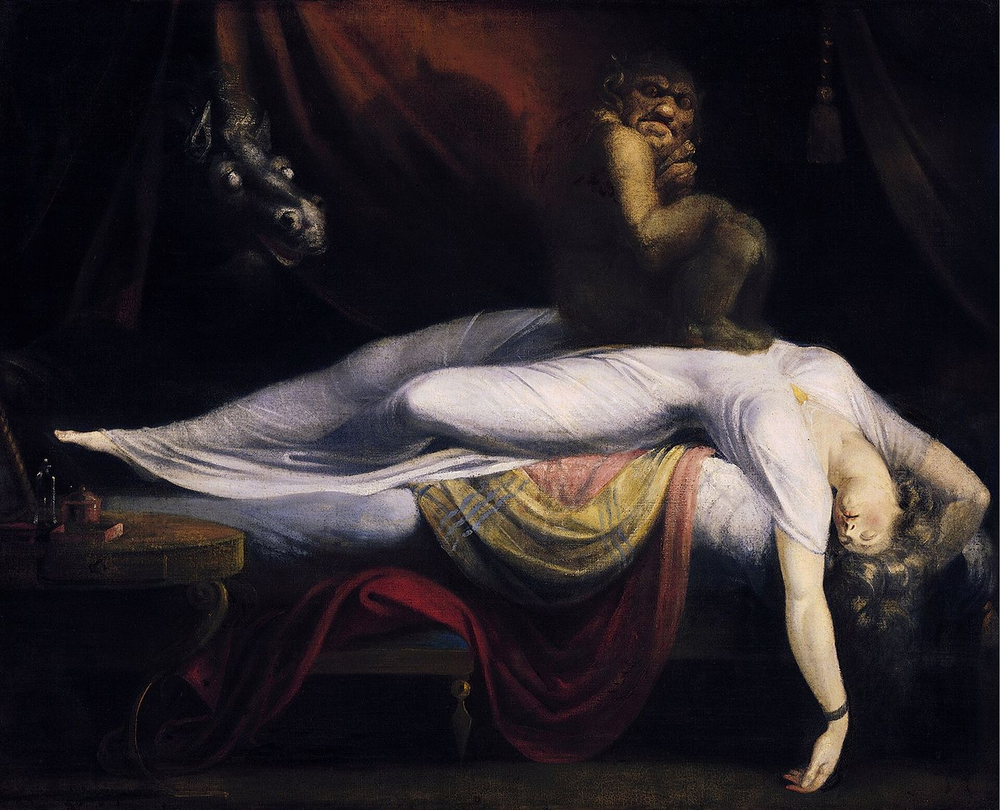

This essay first appeared in Turkish. The English version is my own. A passage from the original on the way dreams are told in Turkish has been kept.


I
For thousands of years people have tried to understand their dreams in the same way: with a dream dictionary. The most famous work in this tradition is the Oneirocritica written in the second century AD by Artemidorus of Ephesus; most of the dream dictionaries read online today, knowingly or not, continue his method. The method is simple: each element of a dream has a fixed meaning. A snake signifies an enemy, water abundance, the loss of a tooth the death of a relative, flying a rise in fortune. The dreamer looks up the elements of the dream in the dictionary and finds the meaning.
In The Interpretation of Dreams, published at the end of 1899 with the date 1900 on its title page, Freud called this a method of “decoding” and rejected it. For Freud, the meaning of a dream lies not in a dictionary equivalent of its elements, the same for everyone, but in the particular connections the dreamer makes with those elements.1 The same snake may call up, for one person, a garden she feared as a child; for another, a lover’s name; for a third, something his father once said. The dictionary of a dream is the dreamer’s own life.
This difference looks like a small difference of method; but it is the foundation of all psychoanalysis. Dream decoding explains your dream to you in someone else’s words. Psychoanalytic interpretation opens your dream in your own words. The first gives you a meaning; the second lets you hear something you did not know but said.
II
The best way to understand Freud’s method is to look at his own dream. On the night of 23 to 24 July 1895, at a villa called Bellevue near Vienna, Freud had a dream. He is receiving guests in a large hall; among them is a young patient, Irma, whose treatment he has not fully completed. He takes her aside and reproaches her for not accepting his “solution”; she says she has pains in her throat and abdomen. He looks into her mouth and sees white patches in her throat. By the end of the dream it emerges that a friend of his has given Irma an injection, with a syringe that was not clean, of a substance called trimethylamine; in the dream Freud sees its chemical formula printed in heavy type.
Freud analyses this dream in the second chapter of The Interpretation of Dreams, sentence by sentence, detail by detail. For each element he writes down what occurs to him: who Irma is, what the white patches remind him of, which colleague the syringe carries an anxiety about. The conclusion he reaches is this: the dream shows a wish of Freud’s as fulfilled. Freud is not responsible for Irma’s still being ill; others are. The dream acquits him of a sense of guilt.2 From this Freud draws a general principle: a dream is the fulfilment of a wish. But this wish is mostly not openly visible in the dream; the dream’s manifest content is a translation of its latent thoughts.
Freud calls this translation the “dream-work” and distinguishes its main operations. Condensation: many thoughts, many people, merge into a single image; a person in a dream may carry at once your mother’s face, your teacher’s voice and a friend’s clothes. Displacement: emotional weight slides from what matters to a detail that seems unimportant; the place in the dream you dwell on most is often the least important. And considerations of representability: thoughts, abstract ideas, have to be turned into pictures. Freud therefore proposes reading a dream not as a picture but as a picture puzzle, a rebus: each image is a sign to be read, like a letter or a syllable.3
III
Many dreams vanish a few minutes after waking. A scene you remember vividly in the morning fades over breakfast and is gone by noon. Freud saw this forgetting as part of the dream itself. The censorship of waking thought, relaxed at night, comes back into force in the morning and erases the places where the dream came closest to itself. The part of a dream that is not remembered is often its most important part.
This is why Freud did not ask his patients to strive to remember their dreams fully. A small fragment that is remembered, a word, a colour, a feeling, is enough, because the associations can reach from there into the forgotten part. Freud also said that every dream has a point that cannot be unravelled, however far interpretation goes, and called it the navel of the dream: the place where the dream reaches down into the unknown, where the thoughts tangle into a knot that can no longer be undone.4 To interpret a dream is not to solve its whole secret, but to go as far as this navel, and to accept that something lies beyond it.
IV
At first sight nightmares seem to refute Freud’s theory. How can a dream in which you are chased, in which you fall, in which someone you love dies, be the fulfilment of a wish? Freud’s answer has two layers. First, in anxiety dreams the wish is often so strong, so naked that the censorship cannot accept it, that the dream-work cannot disguise it sufficiently; anxiety is the sign of the censorship’s failure. Waking from a dream in anxiety is, in a sense, saving yourself at the moment you come too close to the dream itself.
Second, Freud allowed an exception to his theory. The dreams of soldiers returning from the First World War, who relived the traumatic scene every night, could not be read as the fulfilment of any wish. In 1920, in Beyond the Pleasure Principle, Freud thought of these dreams as the product of a repetition trying, after the fact, to bind an experience the psychical apparatus could not master, to give it a form.5 Recurring nightmares after a traumatic event are therefore the sign not of a wish but of something not yet put into words. If such nightmares go on for a long time, rather than carrying them alone one should talk to a professional.
Lacan reread what is perhaps the most striking dream Freud reports in his eleventh seminar. A father, after watching for a long time by the bedside of his dead child, goes to rest in the room next to the one where the body lies; an old man keeps watch over it. In his dream the father sees his child standing beside his bed, catching him by the arm and whispering reproachfully: Father, don’t you see I’m burning? He wakes and notices a light coming from the next room: the watchman has fallen asleep, and a candle has fallen over and set fire to the wrappings and one arm of the body.6 Freud says that even in this dream a wish is fulfilled, the wish to see the child alive a moment longer. Lacan stresses something else: what wakes the father is not the light of the fire outside, but the sentence heard within the dream. The dream exists to protect sleep; but it is sometimes also the place where we meet a real, a sentence, that we could not bear in waking life. Waking up is sometimes a way of escaping that real.
V
Today dreams are also a field of research for neuroscience. In 1953 Eugene Aserinsky and Nathaniel Kleitman described a phase of sleep marked by rapid eye movements and associated with dreaming, REM sleep. In the 1970s some researchers explained dreams as the forebrain’s after-the-fact making sense of random activity in the brainstem; in 2000 the South African neuropsychologist Mark Solms argued that dreaming depends on brain mechanisms distinct from REM sleep, in particular on the brain’s circuits of seeking and desire.7 The debate is not closed. But for psychoanalytic interpretation the real question is not how the brain produces the dream, but how the dreamer tells it. In analysis the dream appears not as a sequence of images but as speech, a narrative; interpretation works on this speech.
A fine example, for Turkish speakers, is the way dreams are told. In Turkish, dreams are mostly narrated with the evidential suffix -mış, which marks something as heard from others or inferred rather than witnessed: Rüyamda denizdeymişim, annem de oradaymış, “In my dream I was, it seems, at the sea; my mother was there too, it seems.” The dreamer has lived the dream; yet in telling it he sets a distance, as if he had heard it from someone else. This small suffix shows, in a form worked into the language itself, that the dream speaks within us like a stranger.8
VI
You can also work with a dream on your own; but it helps to know that this is something different from looking it up in a dream dictionary. A few simple steps are useful. As soon as you wake, write the dream down as it first comes to mind, without correcting it; pay particular attention to the words you use. Then take each element of the dream separately and note what comes to mind, however absurd or irrelevant it seems. A place, a person, a number in a dream is often linked to a memory, a remark, you did not think of at first. The strangest, most meaningless-seeming detail of a dream is often the one that says the most. And look for the dream’s connection with the previous day, with what Freud called the “day’s residues”: dreams often take their material from some small event of the day before.
But the most important thing in a dream can often not be found alone. It is worth remembering that even in analysing his own dreams, Freud wrote openly in his book that he stopped at the most important points and went no further. A dream becomes something else when it is told to another, to someone who listens. This is why dreams have a privileged place in psychoanalysis: in Freud’s phrase, they are the royal road to the unconscious. But this road is travelled not with a dictionary but with speech, your own speech. No dream book can tell you what it means to dream of a snake; but as you talk about it, you can hear what that snake is for you.
Notes
- S. Freud, Die Traumdeutung, Leipzig and Vienna: Deuticke, 1900 (the book appeared in November 1899), chapter two. In this chapter Freud distinguishes the method that interprets the dream symbolically as a whole from the “decoding” method that solves each element with a fixed key, and names Artemidorus as the most important representative of the latter. ↩︎
- Freud gives the analysis of the Irma dream in the book’s second chapter. Five years later, on 12 June 1900, in a letter to his friend Wilhelm Fliess, he asked jokingly whether a marble tablet would one day be placed on the house at Bellevue, reading: “Here, on 24 July 1895, the secret of the dream revealed itself to Dr Sigm. Freud”. ↩︎
- Freud, Die Traumdeutung, chapter six. Freud says here that judging a dream as a picture would be like judging a picture puzzle, a Bilderrätsel, for its artistic merit. Lacan’s formula “the unconscious is structured like a language” is in large part a rereading of this chapter. ↩︎
- Freud, Die Traumdeutung, chapter seven: “der Nabel des Traums”, the navel of the dream. ↩︎
- S. Freud, Jenseits des Lustprinzips, Leipzig, Vienna and Zurich: Internationaler Psychoanalytischer Verlag, 1920, chapters two and four. ↩︎
- Freud, Die Traumdeutung, the opening of chapter seven. Lacan takes up this dream in Le Séminaire, Livre XI: Les quatre concepts fondamentaux de la psychanalyse (Paris: Seuil, 1973), in the lessons of February 1964, as an example of the encounter with the real, a missed encounter. ↩︎
- E. Aserinsky and N. Kleitman, “Regularly occurring periods of eye motility, and concomitant phenomena, during sleep”, Science, 118, 1953; M. Solms, “Dreaming and REM sleep are controlled by different brain mechanisms”, Behavioral and Brain Sciences, 23(6), 2000. ↩︎
- On this feature of Turkish and its meaning for psychoanalysis, see the essay “Lacan in Turkish” on this site. ↩︎
References
- Aserinsky, E., & Kleitman, N. (1953). Regularly occurring periods of eye motility, and concomitant phenomena, during sleep. Science, 118, 273–274.
- Freud, S. (1900). Die Traumdeutung. Deuticke.
- Freud, S. (1920). Jenseits des Lustprinzips. Internationaler Psychoanalytischer Verlag.
- Lacan, J. (1973). Le Séminaire, Livre XI: Les quatre concepts fondamentaux de la psychanalyse (1964). Seuil.
- Masson, J. M. (Ed.). (1985). The complete letters of Sigmund Freud to Wilhelm Fliess, 1887–1904. Harvard University Press.
- Solms, M. (2000). Dreaming and REM sleep are controlled by different brain mechanisms. Behavioral and Brain Sciences, 23(6), 843–850.